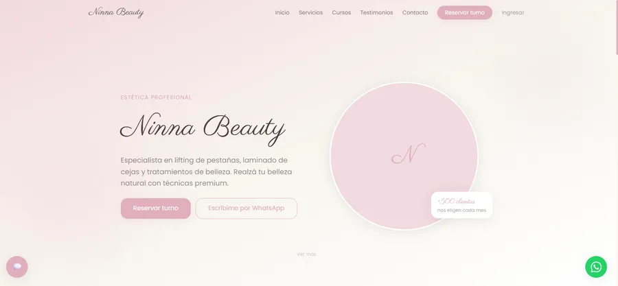
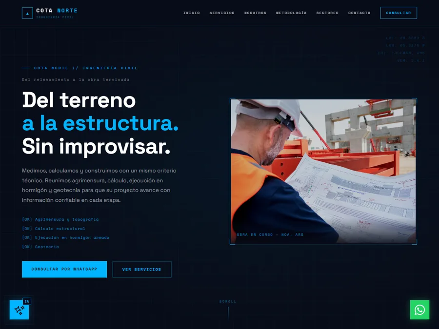

Estoy dando mis primeros pasos como desarrolladora full-stack, construyendo sistemas reales para pequeños negocios: turnos, clientes, stock y pagos, con React, Node.js y MySQL.
Soy Técnica Universitaria en Programación (UTN) — proyecto final aprobado, título en trámite — y actualmente curso la Diplomatura en Inteligencia Artificial Aplicada, también en la UTN.
Antes de empezar la Tecnicatura en la UTN, hice cursos de Desarrollo Web, JavaScript y React JS en Coderhouse — ese fue mi primer acercamiento real a la programación. Trabajo con React, Node.js, Express y MySQL, todavía dando mis primeros pasos como desarrolladora y sumando algo nuevo con cada proyecto que armo.

Aplicación full-stack para administrar turnos, clientes, productos, promociones y usuarios de un centro de estética. Incluye autenticación, panel administrativo, base de datos relacional normalizada y automatizaciones como recordatorios de turno y control de stock.

Sitio completo para una empresa ficticia de ingeniería civil del NOA: servicios, metodología y sectores, con un asistente con IA que responde consultas de los visitantes y un formulario de contacto que envía emails desde un backend propio.
Sitio con backend en MySQL para una escuela de cursos de emprendimiento y sublimación, con gestión de contenido propia.
Universidad Tecnológica Nacional (UTN) — cursado completo y proyecto final aprobado, título en trámite
UTN — en curso
Cursos complementarios — Coderhouse
Si querés ver el código o coordinar una charla, escribime por cualquiera de estos medios. También podés descargar mi CV en PDF.